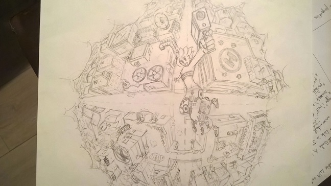
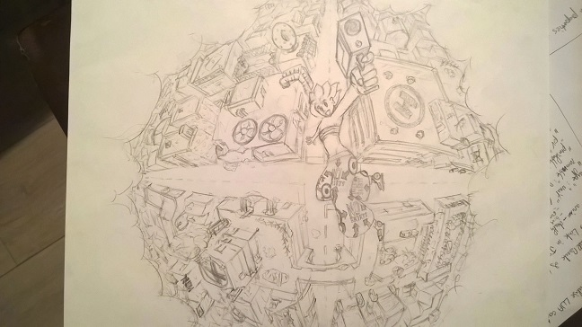

About me
I'm from Alsace (France). I did a scientific school then I got accepted in Polyech Marseille, at the computer science engineer's section. I discovered my liking for performance and architectural problems, in particular in game engines, and I began to approach video games in artistic domains as well.
Since last autumn, I am in the 'Université du Québec à Chicoutimi' (UQAC) for a dual degree with a master in computer science, including courses on game developpement. Actually, I work on my C++ and game engine knowledge. I still periodically learn about game design, and I create characters and universes by drawing (and occasionally writing).
Some drawings :)

 
